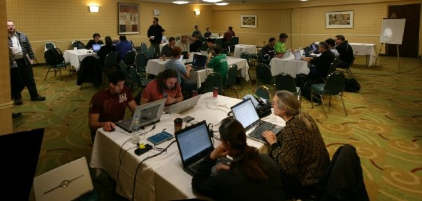

DRAFT: From PyParallel to Python Free-Threading
Optimally Exploiting Multiple Cores with Python
This article takes a look at the new no-GIL, free-threading functionality introduced in Python 3.13, as well as how it compares and performs against PyParallel’s attempt at exploiting multiple CPU cores over ten years ago. Using a demo project named Parallelopedia, we demonstrate the benefits afforded by the new functionality, whereby large data structures (tens to hundreds of gigabytes) are loaded in main memory and then accessed in parallel from Python—a feat not previously possible with the contemporary multiprocessing approach.
This article is sponsored by Meta in collaboration with Quansight and OpenTeams.
Introduction
Since it’s inception, Python has had a Global Interpreter Lock, or GIL, that prevented more than one thread running Python code at the same time.
Python 3.13, released in October 2024, is the first version of Python to introduce support for a “no-GIL” free-threaded mode, per PEP-703 Making the Global Interpreter Lock Optional in CPython, unlocking the ability for multiple Python threads to run simultaneously.
This allows, for the first time since the language’s inception in December 1989, a single Python process to saturate all CPU cores in parallel with pure Python code (i.e. not farming out to extension modules written in C, C++, or, more recently, Rust).
I can’t overstate how exciting this is! For decades, countless attempts have been made to solve this problem—including my own efforts with PyParallel—but no-one has prevailed in getting a solution mainlined into CPython. Until now!
I will admit I am biased: I am a Python committer (though I have not been directly involved in this work, nor have I contributed any changes to Python recently), I adore the language, and have spent years obsessing over the dream of a parallel Python. It’s a topic I’m incredibly passionate about, and this article will unabashedly proselytize the extraordinary engineering efforts that finally made a free-threaded Python a reality.
Thankfully, it’s not just blind, uninformed enthusiasm. Over the past few months I’ve had the opportunity to extensively test-drive free-threaded Python to prepare for this article. The verdict? I think it’s phenomenal. Both the implementation and performance on real-world problems. Free-threaded Python removes a significant limitation, making it possible to tackle a wide range of problems that were previously out of reach. I genuinely believe this is the best thing to ever happen to the Python language over the last three decades, and it will solidify its position as one of the most dominant programming languages for the next three decades. After all, we’re not getting fewer cores.
And this is essentially just the first-pass! Certain trade-offs had to be made to deliver the core functionality within a reasonable time frame—like disabling the non-thread-safe functionality introduced by PEP-659 Specializing Adaptive Interpreter, which is the feature responsible for delivering large speedups in the last few prior releases. However, this is on track to be re-enabled in free-threaded mode for Python 3.14, allowing multi-threaded code to also benefit from the same speedups single-threaded code has enjoyed the past few years.
The goal of this article is to review the technical details of the implementation, with some comparisons to prior work such as PyParallel. I’ll then cover the types of problems that are now incredibly well-suited to be tackled with a free-threaded Python, using a demo project I’ve created called Parallelopedia to provide a basis for concrete examples of real-world problems.
Background
The Related Work section of PEP-703 does a fantastic job of capturing all of the past attempts at improving Python’s ability at simultaneously leveraging multiple CPU cores.
In this section I’m going to focus on Greg Stein’s initial free-threaded work back in 1996, and then my attempts around 2012 with PyParallel.
Greg Stein’s Free Threaded Patch (1996)
The first attempt to remove the GIL was by Greg Stein in 1996, with a patch against Python 1.4. (1996! I hadn’t even heard of Python back in 1996—I was only in tenth grade at the time.)
The python-dev@ mailing lists weren’t public until a few years after that, so we can’t see the specific discussions that were had between core Python developers at the time. Greg opines on the experience in August 2001 in this python-dev@ email titled Free threading. Guido van Rossum also furnishes some pertinent information on the topic in this September 2007 post titled It isn’t Easy to Remove the GIL.
Greg’s approach introduced fine-grained locking to all Python objects, which, unfortunately, introduced pretty severe performance penalties that were deemed too great for the patches to ever make it into mainline Python. With the patches applied, all Python code was slowed down by about 40%-50%, regardless of whether it was single-threaded or multi-threaded code.
Fast-forward 15 years or so, and David Beazley wrote a detailed post in August 2011 about Greg Stein’s work in an article titled: An Inside Look at the GIL Removal Patch of Lore. As part of this article, Dave obtains the original Python 1.4 source, applies Greg Stein’s patches, and takes the resulting free-threaded Python for a run.
Dave confirms that, indeed, the slowdown introduced by this approach—where every increment and decrement reference results in either an interlocked op or a mutex lock and unlock—is prohibitively expensive.
In writing this article, I reviewed Dave’s article again, and attempted to download Python 1.4 so that I could apply Greg’s patches as well. Unfortunately, the download link Dave cites now 404s, so I googled “download Python 1.4 source”, and, funnily enough, the first hit is a Github repo titled tpn/python-1.4 that, ’lo and behold, is a repo I put together twelve years ago doing exactly that:
Python 1.4
Let’s take a look at Python 1.4 and the changes Greg made in the first known effort of someone attempting to remove the Python GIL. All future efforts at this herculean task were influenced by Greg’s work—specifically, in that he identified what absolutely doesn’t work—so it’s valuable to review the core technical aspects of his free-threading patch.
Objects and VarObjects
Python’s main object structure, the PyObject, hasn’t changed much over the years. For non-container objects (i.e. scalars such as integers, floats, etc.) the structure is simply a reference count and a pointer to a type object:
typedef struct {
int ob_refcnt;
PyTypeObject *ob_type;
} PyObject;Container objects–otherwise known as “variable” objects–are represented via the PyVarObject structure. These structures “inherit” the base PyObject layout, and then add an additional field for tracking the number of elements contained by the object: the ob_size field. In Python 1.4, the structure looked like this:
typedef struct {
int ob_refcnt;
PyTypeObject *ob_type;
int ob_size;
} PyVarObject;Reference Counting
There was no cyclic garbage collection in Python 1.4–that feature wasn’t added until Python 2.0 around the October 2000 timeframe. Reference counting was the only means for Python to reclaim the memory used by objects that were no longer needed, by way of the PyObject ob_refcnt field. Incrementing the reference simply added one to the existing value. Decrementing the reference subtracted one and checked to see if the resulting value was zero, and, if it was, the object would be deallocated via _Py_Dealloc().
The relevant Python 1.4 Include/object.h code used two macros named Py_INCREF() and Py_DECREF(), which looked like this:
#define Py_INCREF(op) ((op)->ob_refcnt++)
#define Py_DECREF(op) \
if (--(op)->ob_refcnt != 0) \
; \
else \
_Py_Dealloc(op)These operations are inherently unsafe in a multi-threaded environment. If two or more separate threads are incrementing or decrementing reference counts to the same object in parallel, the results are effectively undefined, as there is no guarantee as to the correctness of the underlying value.
The solution for protecting against this was the Global Interpreter Lock, which ensured that only one thread could be running Python code at any given time.
Thus, if you’re embarking on an attempt to avoid this restriction, such that you can have multiple Python threads executing Python code simultaneously (i.e. on multi-core systems), the first thing you need to do is figure out how you’re going to handle making reference counting thread-safe.
Greg’s Free-Threaded Approach
Greg’s approach tried the most logical solution: make reference counting a thread-safe operation by using interlocked increment and decrement operations against the ob_refcnt field on NT (Windows) systems. On Linux, a mutex lock was used to protect the reference count.
Using a WITH_FREE_THREAD macro to gate his changes, Greg modified the reference counting logic to Include/object.h as follows:
#ifdef WITH_FREE_THREAD
#define Py_INCREF(op) Py_SafeIncr(&(op)->ob_refcnt)
#define Py_DECREF(op) \
if (Py_SafeDecr(&(op)->ob_refcnt) != 0) \
; \
else \
_Py_Dealloc(op)
#else /* !WITH_FREE_THREAD */
#define Py_INCREF(op) ((op)->ob_refcnt++)
#define Py_DECREF(op) \
if (--(op)->ob_refcnt != 0) \
; \
else \
_Py_Dealloc(op)
#endif /* !WITH_FREE_THREAD */So, Py_INCREF(op) became a call to Py_SafeIncr(), and Py_DECREF(op) became a call to Py_SafeDecr(). On Windows, these routines were simply wrappers around the InterlockedIncrement and InterlockedDecrement intrinsics, respectively, defined here:
#define Py_SafeIncr(pint) InterlockedIncrement((long *)(pint))
#define Py_SafeDecr(pint) InterlockedDecrement((long *)(pint))On non-NT systems, the Py_SafeIncr() and Py_SafeDecr() routines were aliased to _Py_SafeIncr() and _Py_SafeDecr(), respectively, which were implemented in Python/pymutex.c as follows:
/* mutexes for the subsystems */
PyMutex * _Py_RefMutex;
PyMutex * _Py_ListMutex;
PyMutex * _Py_MappingMutex;
PyMutex * _Py_CritMutex;
...
int _Py_SafeIncr(pint)
int *pint;
{
int result;
PyMutex_Lock(_Py_RefMutex);
result = ++*pint;
PyMutex_Unlock(_Py_RefMutex);
return result;
}
int _Py_SafeDecr(pint)
int *pint;
{
int result;
PyMutex_Lock(_Py_RefMutex);
result = --*pint;
PyMutex_Unlock(_Py_RefMutex);
return result;
}Oof! That’s a single global mutex _Py_RefMutex protecting all reference counts for all objects. (N.B. PyMutex was a slim wrapper around pthread_mutex_t, and the lock and unlock operations simply called out to pthread_mutex_lock() and pthread_mutex_unlock() respectively.)
Compared to simply incrementing a value in memory by one, locking and unlocking a mutex is orders of magnitude more expensive, so it’s not surprising that this approach to removing the GIL introduced brutal slowdowns—not just to new multi-threaded code, but to existing single-threaded code that wasn’t even taking advantage of the fact that there was now no GIL in place.
Nevertheless, Greg’s work tackled a lot of other important concepts which were mainlined into Python, like separating global state into per-thread state (something that is still relied upon today).
PyParallel
Genesis
The python-ideas@ asyncore discussion
In October 2012, there was a discussion on the python-ideas@ mailing list titled asyncore: included batteries don’t fit. The general discussion centered around providing better asynchronous I/O primitives in Python 3.4, and eventually led to the async and yield from keywords being introduced in Python 3.5, released around two years later in September 2015.
That thread was also the genesis for PyParallel; a fork of Python 3.3.5 that I created to implement a proof-of-concept version of the Python interpreter that tackled not only asynchronous I/O but also multi-core parallelism.
There’s a comprehensive backstory section on PyParallel at the end of this article that goes into more detail. For now, I just want to focus on the implementation details of PyParallel compared to Greg Stein’s earlier work, before discussing the free-threading implementation we now have today in Python 3.13t.
Reviewing Existing Attempts
I remember reading David Beazley’s article and a couple of YouTube videos he’d also done on the topic of the GIL. I can’t remember if it was in one of his videos (or presentations) or articles, but I remember him stating something along the lines of “the GIL is something every Python committer should be worried about”, and that really stuck with me, giving me the initial motivation to embark on the PyParallel project.
The first step I took was to make sure I reviewed Greg’s earlier work to see what did and didn’t work in the past. Clearly, introducing fine-grained per-object synchronization for reference counts was prohibitively expensive—the interlocked increment and decrement operations alone were bad enough, let alone the global pthread_mutex_t reference count locks.
The Hunch
So, what else could we try? My hunch was that there was a way to achieve parallelism within the Python interpreter when framed through the lens of asynchronous I/O primitives, such as a TCP/IP socket server. For example, why couldn’t a simple HTTP server be written in such a way that multiple threads could respond to incoming client requests on multiple cores simultaneously?
If you think about the type of server-side computation that is required to process an incoming HTTP request, it’s just pretty vanilla Python code. Sure, you may create a lot of temporary Python objects in servicing the request, but they’re only short-lived. Once you send a response back to the client, you don’t need any of those objects anymore. And you’re generally not mutating global state, so you don’t need any thread synchronization primitives during request processing.
The underlying operating system’s kernel is handling all of that for you behind the scenes (i.e. you can safely accept() on multiple threads against the same sockaddr_in on Linux, or AcceptEx() against a single completion port on Windows).
Implementation
So, as it pertained to reference counting and garbage collection—all thread-sensitive things that need to be handled very carefully in a GIL-less Python—with PyParallel, I explored the notion of: what if we just didn’t do any of that in parallel thread contexts?
That is, instead of trying to remove the GIL, let’s keep the GIL, and instead, introduce a new concept of a parallel thread. Because if we can come up with an efficient way to determine if we’re a parallel thread at any given time, we can instrument all the thread-sensitive calls like Py_INCREF() and Py_DECREF() such that:
- If we’re a parallel thread, do X, if not, do Y.
- X: a thread-safe alternative
- Y: what we normally do (i.e. when we’re holding the GIL)
And as the thread-sensitive calls we need to instrument are ubiquitous—you really can’t do much in Python before needing to Py_INCREF() or Py_DECREF() something—the viability of this approach would be entirely contingent upon finding an efficient way to detect if we’re a parallel thread.
Detecting Parallel Threads
I introduced a macro named Py_PXCTX() for PyParallel that was responsible for detecting if we were in one of these parallel threads (or parallel contexts as I referred to them in the source code).
As PyParallel was a Windows-only proof-of-concept, I was able to leverage an x64 intrinsic named readgsdword to interrogate the current thread’s TEB (Thread Environment Block) to obtain the current thread ID (which lives at offset 0x48 on x64 Windows). By comparing this to the known thread ID of the main thread (i.e. the thread holding the GIL), we could determine if we were a parallel thread with a couple of instructions.
A simplified implementation looked like this:
#define _Py_get_current_thread_id() (__readgsdword(0x48))
static inline
int
_PyParallel_IsParallelContext(void)
{
return (Py_MainThreadId != _Py_get_current_thread_id());
}
#define Py_PXCTX() (_PyParallel_IsParallelContext())Instrumenting Thread-Sensitive Calls
With the ability to quickly determine if we were a parallel thread, we could instrument all of the thread-sensitive calls to follow the aforementioned paradigm of:
If we’re a parallel thread, do X, if not, do Y.
For reference counting, the do X was literally: do nothing. E.g., instead of the standard Python reference counting mechanics that basically looked like this:
#define Py_INCREF(op) ((op)->ob_refcnt++)
#define Py_DECREF(op) \
(--(op)->ob_refcnt == 0 ? _Py_Dealloc(op) : ;)The PyParallel approach would gate the reference counting logic with the Py_PXCTX() macro, along these lines:
#define Py_INCREF(op) (!Py_PXCTX() && ((op)->ob_refcnt++))
#define Py_DECREF(op) \
(!Py_PXCTX() && (--(op)->ob_refcnt == 0 ? _Py_Dealloc(op) : ;))This is a purposefully-simplified example—the actual Py_INCREF(op) and Py_DECREF(op) calls in PyParallel eventually grew debug guards that allowed me to catch erroneous cases of, for example, the main thread attempting to mutate the reference count of an object created by a parallel thread.
And in order to ascertain if any given object was created by the Python main thread, or one of these new parallel thread contexts, I had to augument the PyObject structure to capture additional state information.
Changes to PyObject
I made three changes to PyObject:
- A field I could fill with a sentinel value that unambiguously indicated from whence it came (i.e. a main thread or parallel thread):
void *is_px. - A flags field I could store pertinent per-object state in:
size_t px_flags. - A pointer to the object’s original type object:
PyTypeObject *orig_type. In some situations, we would override an object’s type with a parallel-specific shim type that could intercept certain operations.
Technically, the is_px field was redundant once I introduced the px_flags field, as we could track whether or not an object was a parallel object by way of a single flag bit, so I could have shaved off 8 bytes by removing it.
I kept it in because a) I never got around to removing it, and b) it was helpful when debugging, as the is_px field was initialized to one of two 0xDEADBEEF-style sentinel values, shown below, which made it very easy to eyeball in the debugger when traipsing through memory or crash dumps.
#define _Py_DEADBEEF 0xdead1234beef5678 /* is_px when main thread */
#define _Px_DEADBEEF 0x9876beef5432dead /* is_px when parallel thread */A side-by-side comparison of the 64-bit Python 3.3 PyObject structure and the equivalent PyParallel PyObject structure is shown below:
Python PyObject
Py_ssize_t ob_refcnt (8 bytes)
PyTypeObject *ob_type (8 bytes)
PyParallel PyObject
void *is_px (8 bytes)
size_t px_flags (8 bytes)
PyTypeObject *orig_type (8 bytes)
Py_ssize_t ob_refcnt (8 bytes)
PyTypeObject *ob_type (8 bytes)
The standard Python 3.3 PyObject structure size on 64-bit platforms was 16 bytes. The PyParallel PyObject changes introduced three 64-bit, 8-byte fields—an extra 24 bytes—for a combined total of 40 bytes.
When coming up with a solution for a parallel Python (that doesn’t experience prohibitive slowdown compared to normal Python code), there are four main things you need to focus on handling, which we’ll cover in the next sections:
- Reference counting.
- Memory allocation.
- Memory reclamation.
- Garbage collection.
Reference Counting
My hunch regarding reference counting was simple: let’s just not do it and see what happens. Such rigorous engineering! Again, I was keen on targeting the very narrow domain of an asynchronous I/O-based TCP/IP socket server, like a HTTP server, where none of the objects that are created as part of servicing an incoming request need to persist once we’ve sent bytes back on the wire to the client.
Additionally, if you think about the flow of a Python program that launches a HTTP server, you’ll have a main thread that does all of the module importing, setting up any global state, handling configuration, command line arguments, etc. Once all of that is done, it’ll launch the HTTP server, and use some form of event loop that allows it to serve incoming clients forever, until process termination.
The code responsible for handling those incoming client requests is very reactionary: you identify what path the client is requesting, figure out how you’re going to route that request (i.e. are they asking for a literal file system file, or is this an endpoint that will be serviced by Python code?), and then respond to it accordingly.
You’re not mutating global state (such as adding values to a global or non-local container object (list, dict, etc.)) in these callbacks.
Finally, you can be assured that for all of the objects you rely upon as part of your request processing (i.e. HTTP URL parsing libraries, application configuration objects, etc.), by the time you’re interacting with those objects in your callback: a) they will have reference counts way above one, and b) there won’t be any other code running that could possibly result in those reference counts ever hitting zero. Those objects are effectively immortal for the duration of your parallel callback, as far as you’re concerned.
So who cares about incrementing and decrementing reference counts for objects we know are guaranteed to stay resident throughout the duration of our parallel callback? By avoiding reference counting entirely, we eliminate the need to figure out a way to increment and decrement reference counts between shared objects in a thread-safe manner—which was the death-knell of Greg Stein’s approach in 1996.
But what about reference counts for objects we create solely during our parallel thread callbacks? Remember, the whole point of an object’s reference count is to ensure the object “stays alive” until it is no longer needed, with “no longer needed” being unambiguously indicated when an object’s reference count hits zero.
However, because our parallel callback code has a very finite and well-defined lifetime, all we really need to ensure is that all of the objects we create in these parallel contexts stay alive for the duration of the callback.
That is, we know our parallel context starts when, for example, we call the user’s data_received() routine, and we know it ends when that routine returns bytes back to us which we then send back to the client.
As long as we can intercept the memory allocation and reclamation routines in these parallel contexts, we can precisely control object lifetime without the need for reference counting.
Memory Allocation
So, when I hit the point I needed to write a thread-safe memory allocator that would kick-in to service memory allocation requests in these parallel contexts, I picked the easiest thing I could think of: just give each parallel thread its own thread-local block allocator. This allocator would furnish all memory allocation requests that we intercepted by instrumenting calls like PyObject_New and PyMem_Malloc.
Block allocators are about the simplest memory allocator you can have: you have a pre-allocated block of memory (say, 4KB, or one page), a request comes in for 120 bytes, you capture the address of the current block pointer, increment it by 120 bytes, then return the captured address. If you exceeded 4KB, another page would be allocated and linked to the existing page, such that you’d have a doubly-linked-list of blocks from which allocations would be carved out.
Prior to executing the user’s callback via PyObject_CallObject() in a parallel thread, we would issue a snapshot = PxContext_HeapSnapshot(ctx), which would “snapshot” the state of the block allocator prior to executing the user’s Python code in parallel; we would then be able to restore this snapshot upon completion of that code.
Memory Reclaimation
How do you free memory associated with individual objects allocated in these parallel contexts? Well, because you’re not doing any reference counting, you have no knowledge of when any given object is no longer required at any arbitrary point within a parallel callback’s execution.
And even if you did, because you’re using a block allocator that isn’t built to handle unused allocations being returned to it, there isn’t anything you could do anyway.
However, what you do know, with absolute certainty, is when that user’s parallel callback has finished executing, because you’ll be sitting back in the Python interpreter’s C code, having just returned from a call to a routine like PyObject_CallObject().
And because you captured a snapshot of the thread-local block allocator (or heap) via snapshot = PxContext_HeapSnapshot(ctx), prior to your call to result = PyObject_CallObject(...), once you’re finished handling the returned result (i.e. sending it back to the client via a socket send() call), you can reset the block allocator back to its starting position prior to the call via PxContext_RollbackHeap(ctx, snapshot), effectively reclaiming all memory allocated in that parallel context in one fell swoop.
This all worked pretty well for PyParallel. I believe it was the first time anyone had experimented with the notion of “let’s just not do any reference counting and see what happens”, and I was genuinely pleased that my hunch that it would all work out turned out to be true.
Additionally, as back-to-back execution of callbacks on the same thread would be continually using the same block allocator, and thus, the same blocks and corresponding virtual addresses—you’d reap all the benefits you’d expect from frequently using the same addresses: increased likelihood of cache hits and TLB hits, vastly-reduced likelihood of page faults.
This all worked because socket-server callbacks are pretty short-lived; you’re not allocating gobs of memory for objects with ambiguous lifetimes. You’re doing lots of little allocations with very clear lifetimes: the allocations will cease to exist once the callback returns.
It wasn’t perfect. You obviously couldn’t persist the objects past the lifetime of the parallel callback, as that memory was getting continually reset. And if you had a stray callback allocating a disproportionately high amount of memory, you’d end up with many page-sized blocks chained together that would have no way of getting returned to the operating system when no longer needed.
But as far as proof-of-concepts go, it all worked pretty well. The last thing to tackle was garbage collection.
Garbage Collection
A nice side-effect of not doing any reference counting is that you can’t create cyclic references between objects in the first place, which obviates the need to do any garbage collection. Thus, PyParallel’s solution for handling parallel garbage collection is simply: don’t do it, it’s not needed.
Async I/O
The workhorse of PyParallel was the PxSocket_IoLoop, some 2,000+ lines of hideous C state-machine-esque hackery that drove the completion-oriented protocol callbacks implemented by the user.
The protocol objects you had to use for PyParallel were similar to the current-day Protocol Python objects used by asyncio.
An example of what a TCP/IP socket server might look like in PyParallel follows. Note that no transport.send() routines were exposed, if you wanted to send bytes back to the client, you literally had to return a Python bytes object from your callback—this would then be sent back to the client in the most optimal fashion.
class MyProtocol:
# Used if you want to send static bytes to the client first.
initial_bytes_to_send = b'Hello (Server v1.0)'
def connection_made(self, transport):
# Used if you need to send dynamic bytes to the client
# as soon as they connect.
return b'Hello, the current time is ' + time.gmtime()
def data_received(self, transport, data):
# Called when data is received from the client. Perform
# your request processing here and then return bytes to
# send back to the client.
return b'You sent: ' + data
def connection_lost(self, transport):
# Called when the client disconnects.
pass
# Create the TCP/IP socket server object (PxSocket). (PyParallel
# initially exposed all of its parallel functionality by way of an
# `async` module, which obviously predated the introduction of the
# `async` keyword in Python, so the following code wouldn't be
# valid in a modern Python 3.5+ context.)
server = async.server('0.0.0.0', 8080)
# Register the server (transport) and protocol with the underlying
# async machinery. Note that this will start serving clients
# immediately, without waiting for `async.run()`.
async.register(transport=server, protocol=MyProtocol)
# Enter the async I/O loop.
async.run()Limitations
PyParallel, was, in essence, a proof-of-concept project I predominantly hacked together over the course of about three months during a very cold Michigan Winter in 2012-2013.
It had many limitations, especially the first pass in that 2012-2013 timeframe. I spent a few months sprinting on it again around 2015, and addressed some of the egregious limitations like not being able to use generators in parallel contexts, and not being able to persist objects created within a parallel context outside of that context (i.e. foo['key'] = bar, where foo is a dict created in the main thread context).
I also got it to a point where it could compete in a subset of the TechEmpower Framework Benchmarks, including non-trivial ones like accessing a PyODBC data source in a parallel context.
Nevertheless, the remaining limitations relegated PyParallel to being somewhat similar to Stackless Python, which was a nichè variant of Python that separated the C call stack from the Python call stack, but never had a chance of getting mainlined into Python.
(Unlike Stackless, though, which had actual users like Eve Online, I am not aware of anyone using PyParallel for anything. I certainly never got any support requests for it.)
The next few sections capture some of the limitations that I presume kept PyParallel from becoming anything other than a proof-of-concept. Thankfully I have the luxury of writing about the failures some ten years after I wrote the underlying code, so I’m inherently less defensive about its egregious shortcomings as I would have been back then.
Parallel Code Has To Be Entered Via Protocol Callbacks
By design, I never intended to support “free-threaded” Python, i.e. you would never be able to create Python threading.Thread objects yourself, instead, you’d have to use the machinery provided to you by PyParallel, such as async.server(), async.submit_work(), etc. (This was before async became a keyword in Python.)
The fact that the only thing that really worked properly was a TCP/IP-based socket server speaks volumes to the lack of general applicability of the solution.
You Couldn’t Do A Lot Of Things In Parallel Callbacks
You couldn’t import modules in parallel callbacks. This wasn’t a huge limitation, you’d simply work around this by making sure you import all the modules you need at startup, before you launch your server.
You couldn’t call routines of modules that used a lot of caching. Pandas is a great example of this: there is a prolific amount of behind-the-scenes caching that happens in Pandas (or at least the version I was experimenting with circa 2015) when interacting with DataFrame objects. This just flat-out did not work in PyParallel—trying to persist parallel objects past the callback lifetime completely went against the grain of how PyParallel was initially architected to work.
You couldn’t leverage PyParallel to, for example, load large data structures in parallel. Because there was no free-threading support, nor was memory allocated in these parallel callback contexts intended to persist after the callback completed—you couldn’t spin up a bunch of threads to load some expensive data structures in parallel (i.e. reading pickles, etc.).
This is actually one of the patterns that I have enjoyed exploiting the most in the new free-threaded Python as its such a huge win for very little effort. I’ll cover this more later.
Third-Party Libraries Required Recompilation
As PyParallel was based off Python 3.3, a lot of the great work that has since been done regarding sanitizing the Python C ABI wasn’t done yet, so modules with C code doing raw Py_INCREF() and Py_DECREF() calls would need to be recompiled to ensure they use the new PyParallel definitions.
This particular limitation is no different to the current state of affairs with Python free-threading: modules that need intimiate knowledge of C Python internals need to be recompiled at the very least, and sometimes will need additional code changes to ensure correct behavior when operating in a No-GIL environment.
The Code Was… Hideous
I hadn’t looked at the pyparallel.c code in a long time prior to writing this article. Boy, it doesn’t hold up particularly well, in my opinion. It’s very clearly hacky proof-of-concept code that realistically had no chance of getting mainlined into Python.
You can peruse all of the changes required to convert Python 3.3.5 into PyParallel by reviewing the diffs folder, which I populated with diffs against base 3.3.5 sources and PyParallel counterparts. The patches to files like Include/object.h I find most interesting, as they contain most of the “thread-sensitive interception” functionality I was reliant upon.
It Was Windows-only
I attribute the success of PyParallel—if we define success as being able to hack together a proof-of-concept that basically worked in about 2-3 months—to Windows. There are a couple of reasons for this, which I’ll capture in the next sections.
Ironically, I suspect the Windows-only aspect also contributed heavily to the failure of PyParallel, given that, as far as I’m aware, no-one played around or experimented with it, and it basically didn’t seem to move the GIL needle at all. (Although I was pleased to see it at least got a shout-out in the Related Work section of PEP-703, and there are parallels (heh) to some of the design decisions I made for PyParallel in the new Free-Threading work.)
I thought at the time that it would be novel and interesting enough to nerd-snipe a few people into downloading it and messing around, but apparently not.
I do remember some engineers from Instagram reaching out and asking about the viability of PyParallel on Linux, but alas, I didn’t have a good answer for that, given how heavily dependent it was on Windows-only features.
Thread Pool APIs and Asynchronous I/O
First, I made extensive use of the phenomenal Thread Pool API introduced in Windows Vista. It is hard to succinctly capture just how sophisticated this particular API is, especially when paired with the NT kernel’s incredibly robust asynchronous I/O primitives, particularly the seminal OVERLAPPED structure and the Completion Port scaffolding.
If you’re interesting in learning more about asynchronous I/O on Windows, slide 47 of my PyParallel PyData 2013 deck is a great place to start.
So, I used the thread pool facilities to manage all thread dispatching for PyParallel. I didn’t have to create any threads myself, nor did I ever intend to support individual Python free-threading threads created via Python’s threading.Thread facilities. There are simply no good cross-platform threadpool alternatives that have equivalent functionality to what is provided by Windows, and a lot of that is because other operating systems just don’t have the kernel mechanisms in place to support things like thread-agnostic I/O, or true asynchronous I/O at the driver level via I/O request packets (or Irps as they’re colloquially called in kernel development circles). Neither Wine nor ReactOS have attempted to implement the Windows Thread Pool API, which I also found to be an interesting data point.
For the TCP/IP socket-server primary use case, enabled by the PxSocket_IoLoop() workhorse described earlier, overlapped-versions of all the socket primitives were used where possible. There aren’t any exact equivalents to these functions on platforms like Linux, the BSDs, or Mac OS.
All of those platforms support non-blocking read and write socket operations—which is the foundation upon which concurrency is achieved when combined with a multiplexing operation like select(), poll(), epoll(), or kqueue. But there is no way to dispatch a socket read() or write() call asynchronously in conjunction with a request for the OS to invoke a callback you provide when that asynchronous operation completes (or fails).
Nor do any of these platforms have anything remotely close to the secret sauce behind what makes I/O completion ports so special: the ability to specify a completion port’s desired concurrency, where the kernel itself will ensure that an optimal number of threads will be actively scheduled whilst servicing a completion port. I touch on this subject a little bit on slide 50, and go into more detail around slide 62.
io_uring is an exception: it absolutely allows asynchronous submission of a whole range of system calls, but it doesn’t introduce a thread-agnostic I/O model, nor have any kernel participation in concurrency modulation like I/O completion ports, nor have any native thread pool integration (as there is no equivalent to the Windows Thread Pool API on any platform, Linux included).
Generally, leveraging io_uring in a multi-threaded environment on a contemporary Linux system would involve spinning up your own threads and setting up individual completion queues for each thread. There’s no concept of multiple threads sharing a queue in a kernel-integrated, thread-agnostic manner. Which is fine, as that’s a very Windows NT kernel solution to the problem—it just isn’t how UNIX-derived operating systems are designed to work.
I am not disparaging io_uring in the slightest here; it is a fantastic additional to the Linux kernel that is orders of magnitude better than prior options for async I/O.
The point of mentioning all of this is that there isn’t feature parity between io_uring and the Windows features I leveraged in making PyParallel, so it would still require significant engineering effort to port PyParallel to non-Windows platforms. And thankfully that’s not something we’ll ever have to embark upon, as the cross-platform Python Free-Threading implementation is a far better solution to the multi-core Python problem than PyParallel ever was!
(Also, for what it’s worth, io_uring wasn’t available in 2012 when I started hacking on PyParallel; it first appeared in the Linux kernel 5.1 in May 2019.)
The point of all of this is to convey that PyParallel wasn’t just Windows-only because I didn’t have the time or inclination to try compile it on other platforms—it extensively used APIs for which there are still no equivalent counterparts on other platforms, some thirteen or so years later.
So, if you were to try get PyParallel working on Linux or Mac OS X, for example, you’d need to write a whole bunch of thread pool and synchronization scaffolding, as well as PxSocket_IoLoop()-equivalents using whatever the underlying platform’s optimal socket multiplexing system call was.
Visual Studio Debugger
The other element of developing PyParallel on Windows that I consider crucial to its success (again, defining success as getting a proof-of-concept working in about 2-3 months) was Visual Studio’s sublime debugging facilities.
Microsoft has always invested heavily in fantastic debugger experiences. This includes usermode application debugging via tools like Visual Studio, all the way up to kernel debugging via Windbg.
The first week or two of PyParallel’s development was simply stepping through the Python C code line-by-line in Visual Studio’s debugger, building up a mental model of exactly how the interpreter worked at the lowest-level when executing a Python program. I didn’t write a line of code during this initial exploratory period—I was genuinely just traipsing through the debugger observing how Python worked and building up my situational awareness and mental model. Incredibly valuable experience, by the way. It’s my favorite way of getting up to speed with an unfamiliar code base.
Visual Studio Code is pretty good at debugging C programs visually these days on non-Windows platforms—I certainly used it a lot at Voltron on our Theseus product, which was exclusively in Linux and C++. However, Visual Studio Code didn’t appear until 2015, whereas my initial PyParallel hacking was toward the end of 2012.
Once I started actually writing code for PyParallel, again, the Visual Studio debugger was indispensable. Particularly due to how frequently I’d be crashing in the course of normal development, heh. It was incredibly handy with a few mouse clicks to be able to freeze all threads OTHER than the one you were interested in, step execution through that, then resume, etc. You can do all of this via gdb and lldb when doing console debugging on UNIX-ish platforms, but it’s definitely not as convenient as a full-featured IDE for debugging.
Performance
Now, for all its limitations and ultimate market failure, PyParallel excelled at the one thing it was designed to do well: async I/O-oriented TCP/IP servers, where users would implement protocol classes that featured completion-oriented callbacks, and those callbacks could be run simultaneously on multiple cores without any egregious slowdown (i.e. compared to normal, single-threaded Python code); i.e.: in parallel.
There was negligible overhead introduced by instrumenting all of the thread-sensitive macros, nor the thread-safe alternates for reference counting (don’t do it), garbage collection (don’t do it), memory allocation (simple block allocator), and memory reclamation (reset block allocator after a callback has completed). Collectively, this all ensured that the new parallel context Python code ran just as fast, if not faster, than normal single-threaded Python code.
Remember, the prior approach by Greg Stein (some sixteen years prior) where fine-grained locking was introduced at the individual object level made all Python code run about 40% slower, not just new multi-threaded code.
So PyParallel at least demonstrated that you could get a mostly-functional parallel version of Python without incurring prohibitive slowdown to all code.
The PyParallel Performance section of the website features some concrete metrics that I captured back in 2015 with whatever hardware I had lying around at the time.
My favorite metric was that PyParallel’s plaintext benchmark (basically a HTTP server that responded to /plaintext with a plain text Hello, World! response) performance yielded 132,772 requests per second which put it into first place across all the platforms I benchmarked.
LWAN, a raw C Linux implementation well-known for its performance, came in second with 128,126 requests per second. Granted, I cheated on my side, leveraging an SSE-accelerated HTTP parser to process the incoming request, per the http11 = True line below:
# PyParallel (Fast)
# (Uses picohttpparser's SSE-accelerated HTTP parser.)
import async
class Plaintext:
http11 = True
def plaintext(self, transport, data):
return b'Hello, World!'
server = async.server('0.0.0.0', 8080)
async.register(transport=server, protocol=Plaintext)
async.run()So the only Python code actually being executed in this example was the return b'Hello, World!' line, which is so simple its basically a no-op. Thus, the only thing I was really demonstrating there was the performance of the PxSocket_IoLoop() implementation, plus the underlying Windows threadpool and async I/O facilities.
The slow version featured a full HTTP request parser written in Python, which clocked in at 53,455 requests per second (which was still significantly higher than other pure-Python implementations like Tornado).
More Information
I’ve omitted a lot of PyParallel details on purpose—this section is long enough as it is! If you’re interested in learning more, I’d recommend the following deck which I presented at PyData 2013 in New York City:
Additionally, all the source code for PyParallel is available on Github, and the landing page’s README.md has additional technical information about the project and implementation. You can download a working, usable installer, complete with PyParallel-compatible versions of Cython, NumPy, and PyODBC, and various other third-party site-packages from the PyParallel 3.3.5.99805 Release page.
Python Free-Threading
So far we’ve covered Greg Stein’s initial attempts at removing the GIL back in 1996, plus my attempts at removing the GIL limitations without actually removing the GIL via PyParallel around 2012-2013. I’ve introduced four main categories of things that need to be tackled when attempting to solve the parallel Python problem:
- Reference counting.
- Garbage collection.
- Memory allocation.
- Memory reclamation.
Funnily enough, the Overview of CPython Changes section in PEP-703 also lists four categories, albeit slightly different:
The implementation changes can be grouped into the following four categories:
- Reference counting (and garbage collection)
- Memory management
- Container thread-safety
- Locking and atomic APIs
I didn’t spend time discussing how Container thread-safety was tackled by Greg in his work, nor how I tackled it in my PyParallel work. Here’s a quick recap: Greg used a single global mutex to protect container objects (i.e. lists, dicts), and I did all kinds of hacky type interception that required you to explicitly “protect” a global or non-local list or dict object via async.protect(obj). Greg’s approach was slow but correct, my approach was fast but kinda’ sucked, and would crash the Python interpreter if you didn’t use it properly. Thankfully, the requisite engineering elbow-grease was applied for the free-threading work and a fast and correct solution (that doesn’t kinda’ suck) was obtained.
PEP-703 goes into great detail on all aspects of the free-threaded implementation, from motivation to very detailed descriptions of the implementation. I highly recommend reading it if you’ve gotten this far so you can see how all the obstacles I’ve been discussing were overcome.
I’ll spend a little bit of time in this next section covering some of the key points of the free-threading implementation, particularly as it pertains to the things that were done differently to Greg Stein’s work and PyParallel regarding reference counting, garbage collection, memory, etc.
After that, we’ll take a look at some non-trivial examples of real-world problems that can now be tackled performantly.
Implementation
Much like PyParallel, the Free-Threading Python work needed to augment the standard PyObject structure in order to support the new thread-safe functionality in lieu of the traditional single Global Interpreter Lock.
Let’s review these changes first, focusing solely on 64-bit Python builds.
Changes to PyObject
Python 3.13 PyObject
The standard Python 3.13 PyObject struct is semantically identical to the one we introduced earlier in the Python 1.4 Objects and VarObjects section (albeit with types tweaked to support 64-bit architectures):
typedef __int64 Py_ssize_t;
typedef struct {
Py_ssize_t ob_refcnt;
PyTypeObject *ob_type;
} PyObject;
typedef struct {
PyObject ob_base;
Py_ssize_t ob_size;
} PyVarObject;The visual depiction of PyObject in Python 3.13 64-bit is the same as before, with a total structure size of 16 bytes:
Py_ssize_t ob_refcnt (8 bytes)
PyTypeObject *ob_type (8 bytes)
Free-Threaded PyObject
The new PyObject structure in the Free-Threaded build has grown numerous new fields, and lives below the GIL version in Include/object.h, reproduced below (with supporting typedefs):
// Only the two least significant bits are used; remaining bits
// always zero.
// 0b00: unlocked
// 0b01: locked
// 0b10: unlocked and has parked threads
// 0b11: locked and has parked threads
typedef struct {
uint8_t _bits;
} PyMutex;
typedef struct {
// ob_tid stores the thread id (or zero). It is also used
// by the GC and the trashcan mechanism as a linked list
// pointer and by the GC to store the computed "gc_refs"
// refcount.
uintptr_t ob_tid; // thread id
uint16_t _padding; // ob_flags in 3.14+
PyMutex ob_mutex; // per-object lock
uint8_t ob_gc_bits; // gc-related state
uint32_t ob_ref_local; // local reference count
Py_ssize_t ob_ref_shared; // shared (atomic) reference count
PyTypeObject *ob_type;
} PyObject;N.B. The _padding field has been renamed to ob_flags in Python 3.14+.
A visual depiction of the Free-Threaded PyObject structure on 64-bit architectures follows. The object size has grown an additional 16 bytes from the with-GIL PyObject, doubling the total structure size to 32 bytes.
uintptr_t ob_tid (8 bytes)
uint16_t ob_flags (2 bytes)
PyMutex ob_mutex (1 byte)
uint8_t ob_gc_bits (1 byte)
uint32_t ob_ref_local (4 bytes)
Py_ssize_t ob_ref_shared (8 bytes)
PyTypeObject *ob_type (8 bytes)
If you’ve followed along with the prior work exposition earlier in the article, you can probably take a pretty educated guess as to not only what the new fields are for, but also, why they were needed.
Object Thread ID: uintptr_t ob_tid
This field captures the thread ID of the owning thread for any given object. I like this! I also like how this particular value is obtained, because it means you can quickly check if you own the thread by comparing an object’s thread ID with your own, as follows:
static inline uintptr_t
_Py_ThreadId(void)
{
uintptr_t tid;
tid = __readgsqword(48);
return tid;
}
static inline int
_Py_IsOwnedByCurrentThread(PyObject *ob)
{
return ob->ob_tid == _Py_ThreadId();
}Hey! Look at that, it uses the same technique PyParallel used to determine the current thread ID with the least amount of overhead possible. I’m not sure if the idea was sourced from PyParallel or not; if not, it’s at least a good example of convergent evolution—that is, if you need to quickly determine the ID of the current thread, well, there’s really only one optimal way of doing it per platform.
Per-Object Locking: PyMutex ob_mutex
TBD
Garbage Collection State: ob_gc_bits
Parallelopedia
HTTP Server
- Multi-threaded
asyncio-based HTTP server. - Performance/benchmarks.
- Compare
-Xgil=0to with GIL.
TODO
Wiki Server
TODO
PyTorch and Free-Threading
Training a local GPT2
Multi-threaded Inference
- Via
asyncio& HTTP server.
Appendix
PyParallel Backstory
I’m not sure how interesting this section will be to readers, which is why I’ve stashed it at the end of the article. The older I get—especially now that I have a daughter—the more cathartic it is reminiscing about the early parts of my career some nearly-two-decades-ago.
This section captures the backstory behind PyParallel. PyParallel was born out of a) my interest in asynchronous I/O and multithreaded programming, and b) my experience with Snakebite, an “open source network” I built with the goal to provide Python committer’s access to all the different types of platforms Python ran on—especially all the UNIX derivatives from the late 90s to 00s for which I seemed to be genetically predisposed to overly romanticize.
And I came up with the idea for Snakebite as a Python committer, where I found myself often frustrated at trying to debug buildbot breaks on platforms for which I had no access. And becoming a Python committer was an artifact of my involvement with the Python language, particularly with regards to providing buildbots and help with Windows 64-bit Python builds in the early days where AMD64 was still a novelty.
And I was led to Python by a random article by Eric S. Raymond, coupled with growing resentment toward Perl, which I found myself having to use when working with ClearQuest.
That’s the reverse chronological history in a nutshell. The next few sections go into more detail chronologically.
Becoming a Python Committer
From around 2000 to 2004, I was writing mostly C, C++, and Perl. I had founded a company with a business partner, Jamie Echlin, called OnResolve, and provided consultancy for an IBM—formerly Rational—change management product called ClearQuest, as well as a number of software products that extended the functionality of ClearQuest. ClearQuest could be customized in two languages: Visual Basic, and Perl. The most prominent software product Jamie and I created was OnMessage, which was a combination of C++ and Perl, and provided enhanced e-mail notification facilities for ClearQuest. Jamie deserves much of the credit for what eventually became known as OnMessage —despite having a quirky Perl coding style I found difficult to work with, he absolutely laid the foundation for the product and the subsequent success we had with it.
ClearQuest, and its version-control counterpart, ClearCase, were ubiquitous in all of the industries that had the most money in the early to mid 2000s. Particularly finance and oil. No-one liked using either of them, they were expensive, required huge teams to maintain and administer, and with the advent of tools like Git and Github (albeit many years later), they are now relegated to the annals of history.
I was relatively productive with Perl, but I didn’t particularly like it. And I absolutely loathed having to deal with other people’s Perl code. Around late 2004 and 2005, Python arrived on my radar. I remember reading Eric S. Raymond’s Why Python article about Python, and it resonated strongly with me. Coming from Perl, Python just felt simply magical. It was intuitive, easy to read, not cryptic, easy to work with other people’s code, powerful–particularly as a glue language.
I adored it. I tackled all new projects with Python. I wrote a Python wrapper around ClearQuest named cqpython, which I used to carry out one of my most favorite projects to date: merging two ClearQuest databases into a single instance by auto-generating optimized SQL to conduct the merge at the database level. (This was harder than it sounds, as all ClearQuest databases would start off with the same unique ID offsets, so two otherwise unrelated databases would have almost identical keys for different entities, which needed to be resolved efficiently at merge time.)
By 2007-2008, I was bored of ClearQuest—it wasn’t a fun product to work with, nor did it look like it would be a good career move to continue specializing in it; the prices were extortionate, a lot of companies were trying to move off it, and better, cheaper alternatives were popping up.
However, it sure had been lucrative. I was able to enjoy extended periods of not needing to work, and I spent that time on things I was finding really fun, like contributing to Python. I set up a bunch of buildbots for Python, and was particularly interested in getting the 64-bit Windows Python builds “green” on the buildbots I had set up. I think I even paid for the Verisign code signing certificate used for the Python.org official Windows binaries back then (this was still the Python 2.x days).
This was back in the day where Martin von Löwis was still an active contributor for Python, and if I recall correctly, the release manager for the Python 2.x series. Martin also maintained the Windows Python builds, a role that was eventually taken over by Steve Dower, who is still doing it to this day.
In 2008, I attended PyCon in Chicago. It was my first-ever PyCon. I had a fantastic time, and particularly loved the core Python sprints that happened after the conference. For those that are unaware, this is the one time every year where many of the active Python committers, including Guido, get together in a big conference room and just hack on Python collectively for a few days.
It was a bit of a surreal experience, sitting in a room hacking on Python alongside the very founder of Python himself—Guido—plus many other luminaries that actively contributed to the language over the years. I don’t know who took this photo, nor why it appears to have dimensions tailored towards ants, but you can see myself and Michael Foord in the foreground table (dark maroon t-shirt on the left and orange t-shirt on the right, respectively), Guido in the bright green shirt at the top right table, sitting with Neal Norwitz and Barry Warsaw. And that looks like Brett Canon in thinking pose in the dark t-shirt and Martin von Löwis sitting next to him scratching his head at whatever Brett was doing at the middle table :-)

I remember inundating Martin with patch bombs fixing various buildbot-related things at the start of that sprint, to which Martin eventually dealt with by simply offering me commit privileges. I enthusiastically accepted! Honestly, that was a career highlight. This was in the days before everything was Github and Pull Requests—becoming a Python committer meant you would literally get svn+ssh access to svn.python.org, plus ssh access to the python.org boxes themselves if you wanted it/needed it (i.e. for buildbot master configuration). This was certainly more compelling than the ClearQuest consultancy I’d done in the past, that’s for sure!
As much as I love Git and Github, getting your pull request accepted for an open source project just doesn’t have the same feel as getting offered commit privileges like back in the old days.
Colophon
As much as I enjoy reading technical articles, I often find myself equally interested in the tools the author used in the production of the article. In this final section, I attempt to capture details regarding the tools used to author this article, in no particular order.
Quarto & Markdown
This article was written in Markdown using Quarto. The source code is here; there’s also an Edit this page link on the top-right of the page, under the contents (assuming you’re viewing the site on a wide-enough device).
For the syntax color scheme, I copied the dracula.theme from the Quarto repository into tpn.theme and then just hacked on it until I was mostly content with the results.
My whole trent.me website uses Quarto, and is hosted publicly on Github at my website repo. I also leverage Github’s hosting facilities via their “Pages” functionality, the configuration of which can be seen below.
{kind=link}
“Development” on the website (i.e. writing articles like this one) is done on a variety of boxes, typically all Linux/WSL2. Quarto has a useful preview feature, so my local workflow is usually just something as simple as:
% cd ~/src/website
% quarto previewI edited this index.qmd page predominantly in vim, although I’d sometimes use VS Code and the Quarto extension with integrated previewing. I generally turn Copilot off in vim when writing pure text, it’s too distracting, and isn’t geared toward writing new prose versus coding tasks, which is obviously its bread and butter.
AI Tooling
In general, I for one welcome our new AI overlords. I have heavily integrated Copilot and ChatGPT into my workflow now as a developer for the past two years or so, and I thoroughly enjoy leveraging both tools.
LM Studio
LM Studio has also left a lasting impression and I’ve enjoyed experimenting with it a lot recently too. This has been aided by having a local box at home with 256 GB RAM, 40 cores, four Tesla V100 32GB GPUs, and a 14TB RAID0 stripe—plenty of room to download all of these huge models coming out.
A nice thing about LM Studio is that with a few clicks you can expose a local, OpenAI-compatible REST interface. LM Studio is powered by llama.cpp.
Aider
I came across Aider recently. Aider is, to quote their website, directly, AI pair programming in your terminal. It’s pretty neat, and I played around with having it drive a little bit of the Python development in the parallelopedia repo, and a lot of the development in the parallelopedia-ui repo, which is the React, Bootstrap, JavaScript/JSX web UI seen in this article.
i’m not a web developer, I don’t know how to write web apps, I don’t care about code quality of web apps I do write (as I’m not writing anything other than demos or small little tools), so, whatever gets the job done is fine. However, I am, by trade, a software engineer, so a lot of the core skill set still commutes when working in foreign domains. Especially these days when you have AI an alt-tab away, or, in the case of Aider, available in a terminal to carry out your development requests.
The biggest issue I had with Aider was honestly just biting the bullet and just trying it. Begin, the rest is easy as they say. It’s definitely not perfect–I had to jump in and fix things a few times every session I had with it, but we’re talking maybe five interventions within a 3-4 hour coding session, give or take. It was particularly good at generating scaffolding that I could hack further with a single sentence. And it was really good at writing an entire Python unit test module for me based on a single-sentence.
To get started with Aider:
% python -m pip install aider-install
% aider-install
# Restart shell, or `export PATH=$HOME/.local/bin:$PATH`
% which aider
/home/trent/.local/bin/aider
# I've got my OpenAI keys in a GPG-encrypted file ~/.zsh/openai_key.asc.
% which init_openai_key
init_openai_key () {
if [ -f ~/.zsh/openai_key.asc ]
then
export OPENAI_API_KEY=$(
gpg -d --batch --quiet ~/.zsh/openai_key.asc
)
fi
}
% init_openai_key
% aider --model gpt-4o --vimIt was trivial to point it at a local model hosted by LM Studio, too, after enabling the Developer view and starting a local development server (which will default to hosting on http://<hostname>:1234/v1):
% LM_STUDIO_API_KEY=notused \
LM_STUDIO_API_BASE=http://$(hostname):1234/v1 \
aider --model lm_studio/qwen2.5-coder-32b-instruct@fp16 --vimBy default, Aider keeps a Markdown transcript of your sessions in a file named .aider.chat.history.md in the root of the repository you’re working with. I have included the transcript from my parallelopedia-ui repo below. I haven’t edited it, so it contains all my mistakes and errors and whatnot.
Comments